BTP ABAP Trial einrichten
Dokumentation des Einrichtungswegs von SAP BTP Trial über Business Application Studio, Destination-Konfiguration und Eclipse ADT bis zur ersten lauffähigen ABAP-Klasse.
Ziel der Dokumentation
Diese Seite hält fest, welche Schritte beim Aufbau einer ABAP Cloud Trial Umgebung relevant waren, welche Fehlersituationen aufgetreten sind und welche Entscheidung am Ende praktikabel war. Der Fokus liegt auf einem reproduzierbaren Lernpfad: Trial-System finden, Verbindung herstellen, Projekt öffnen, Paketstruktur verstehen und ein erstes Minimalbeispiel ausführen.
Zusammenfassende Einführung
Die folgende eingebettete Seite enthält die vorgeschaltete Einführung zum ABAP Cloud Trial. Sie dient als Kontext vor der chronologischen Detaildokumentation, den Screenshots und den konkreten Fehlerbildern auf dieser Seite.
Falls die Einbettung im Browser blockiert wird: Einführung direkt auf pertion.io öffnen .
Kurzfazit
Eclipse ADT war der funktionierende Weg
Die Arbeit mit Eclipse ADT führte zur erfolgreichen Verbindung und zur Ausführung der ABAP-Klasse.
Business Application Studio blieb eingeschränkt
Im BAS war die Systemauswahl trotz Destination-Konfiguration nicht zuverlässig verfügbar.
ZLOCAL und Unterpakete beachten
Structure Packages können keine Development Objects enthalten. Für Objekte braucht es ein geeignetes Unterpaket.
Chronologischer Ablauf
SAP BTP Trial und ABAP Trial prüfen
Im SAP BTP Cockpit wurde geprüft, ob die ABAP Trial Instanz beziehungsweise Subscription vorhanden ist. Relevant waren Subaccount, Instances and Subscriptions sowie die Service-Instanz für ABAP.
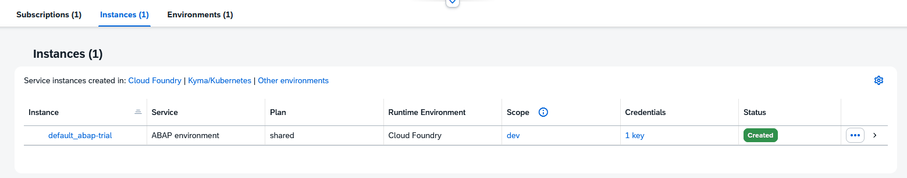
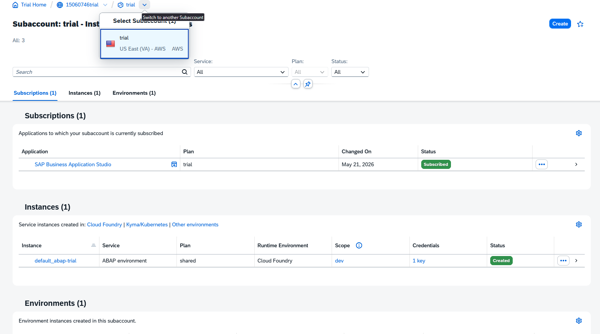
Business Application Studio öffnen
Im Business Application Studio wurde ein Dev Space geöffnet und die ABAP Cloud beziehungsweise Full-Stack-Projektvorlage geprüft.
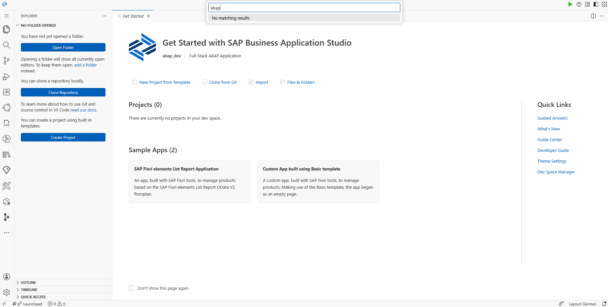
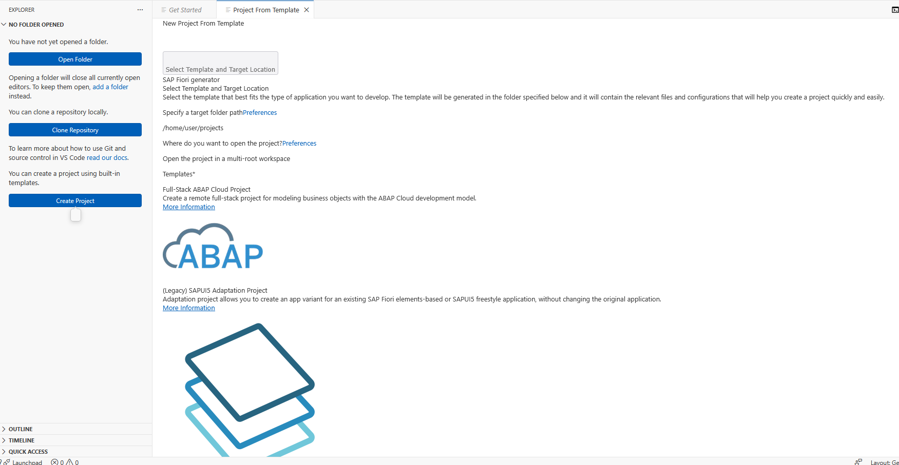
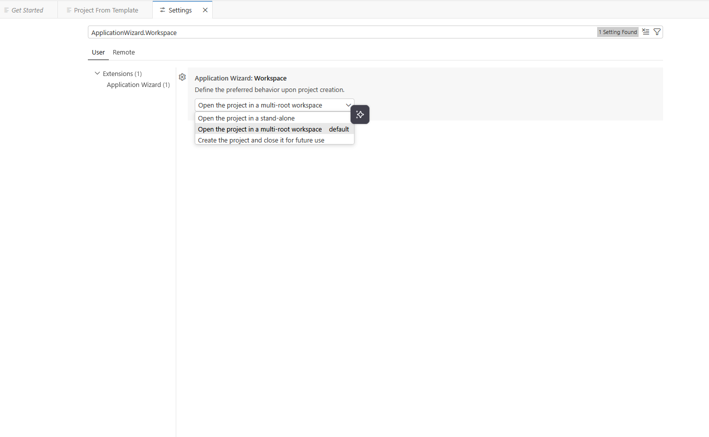
Systemauswahl im BAS analysieren
Beim Anlegen eines ABAP Cloud Projects blieb die Systemauswahl leer beziehungsweise es wurde kein passendes System gefunden. Damit war klar, dass die Destination-Konfiguration überprüft werden musste.
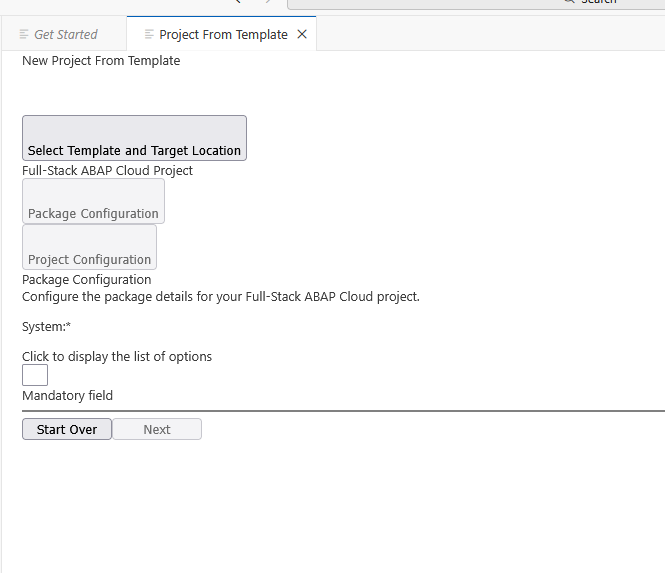
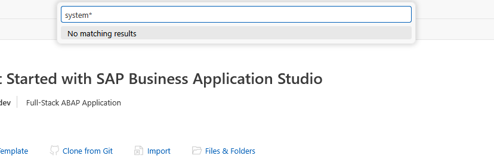
Destination anlegen und prüfen
Im BTP Cockpit wurde eine Destination aus der Service Instance beziehungsweise aus einem bestehenden Service Key erstellt. Danach wurde die URL korrigiert und die Verbindung geprüft.
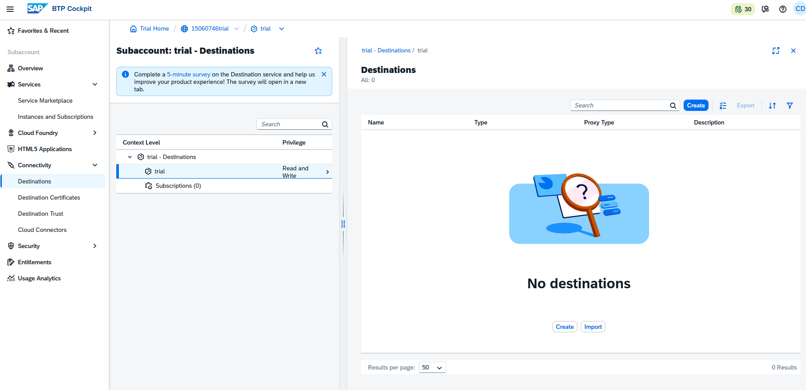
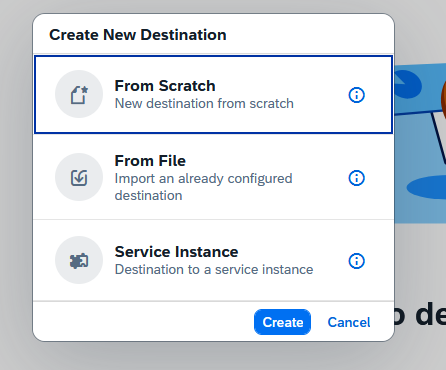
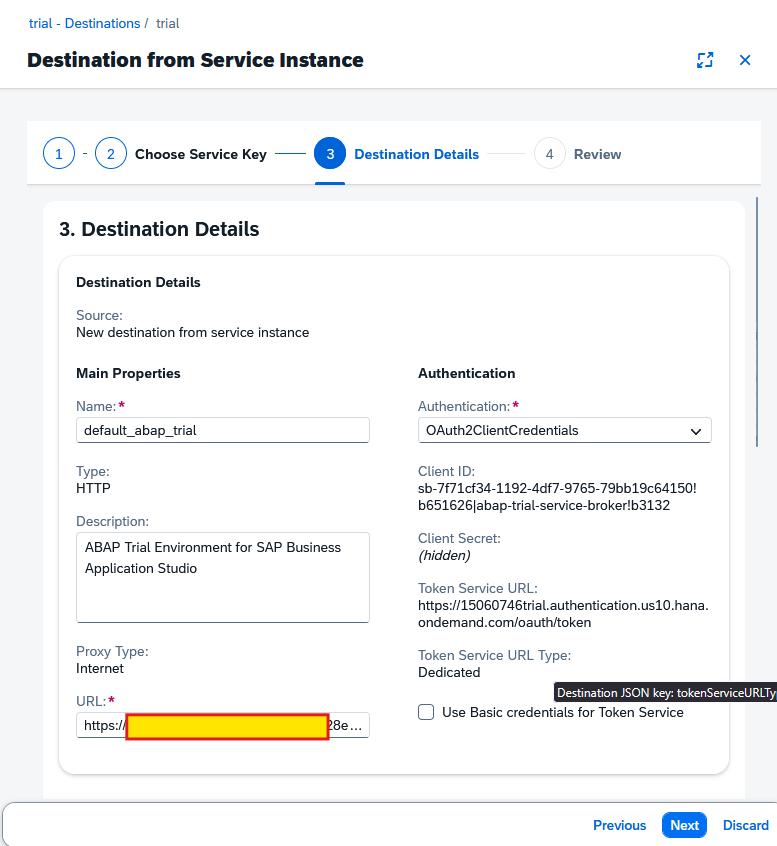
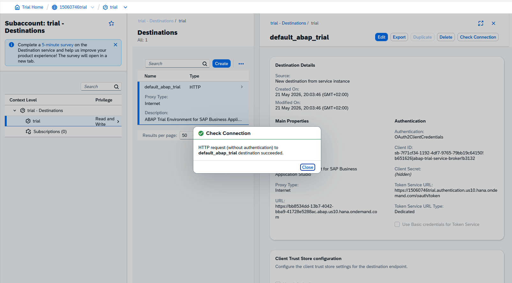
Destination Properties ergänzen
Für die BAS-Erkennung wurden Properties geprüft. Der wichtige Punkt war, dass bestimmte Properties wie sap-platform nicht immer verfügbar waren und ersatzweise WebIDE/HTML5-bezogene Einstellungen geprüft wurden.
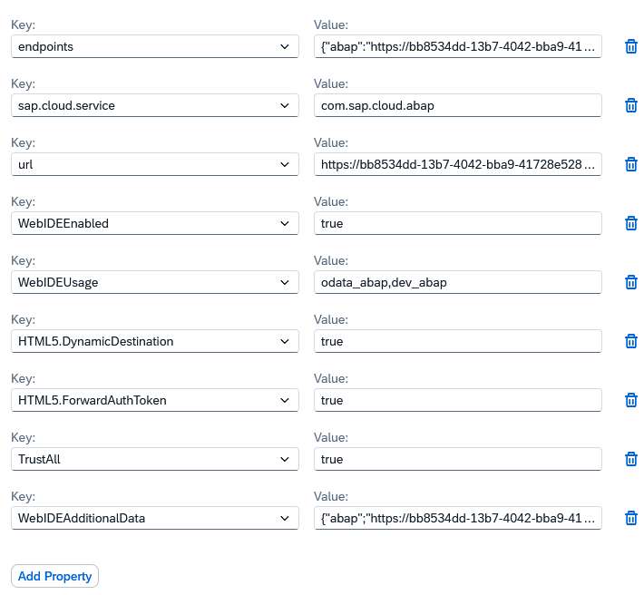
Entscheidung: Wechsel auf Eclipse ADT
Da BAS das System weiterhin nicht zuverlässig anbot, wurde Eclipse ADT als stabilerer Weg verwendet. Die Entwicklungsumgebung wurde geprüft, ABAP-bezogene Erweiterungen wurden gesucht und ein neues ABAP Cloud Project wurde angelegt.
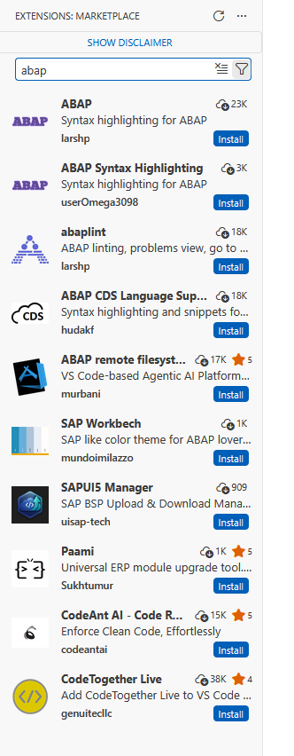
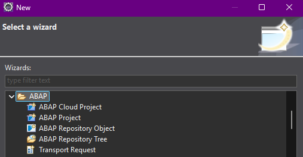
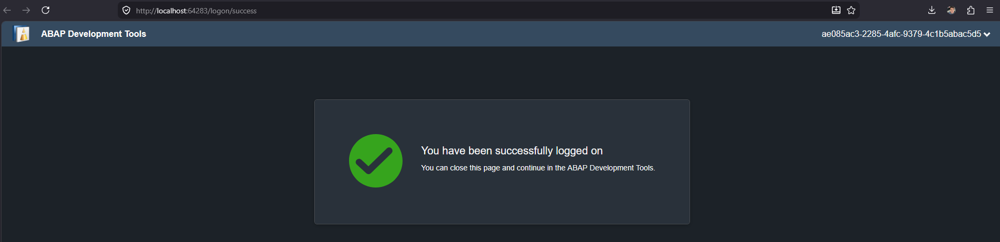
Login und Verbindung herstellen
Der Browser-Login aus ADT war erfolgreich. Danach konnten die Connection Details des ABAP Cloud Projects geprüft werden.
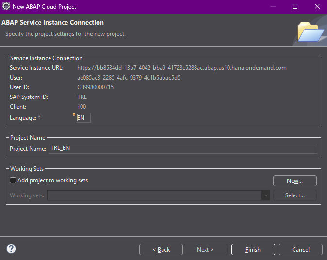
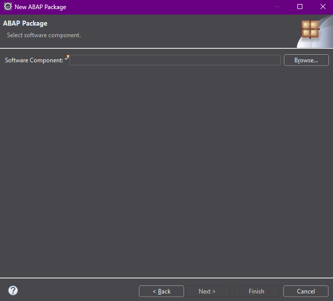
Software Component und Paketstruktur verstehen
Beim Anlegen von Paketen wurde sichtbar, dass eine Software Component erforderlich ist und nicht jeder Paketname beziehungsweise Präfix zulässig ist. ZLOCAL war vorhanden, aber als Strukturpaket nicht direkt für Development Objects geeignet.
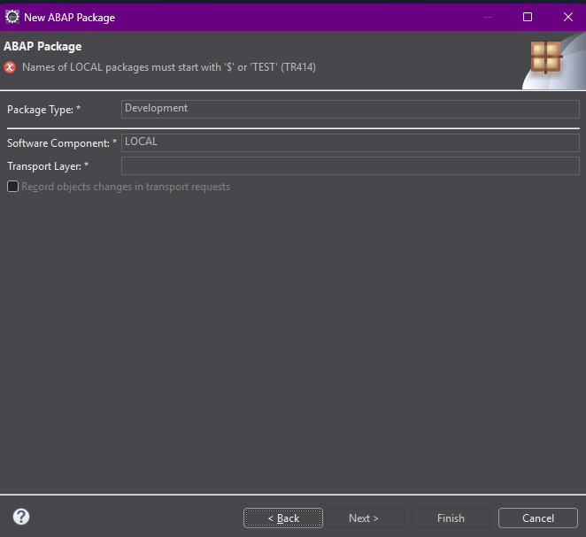
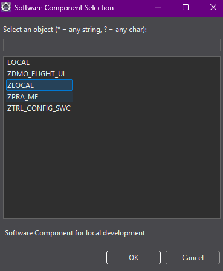
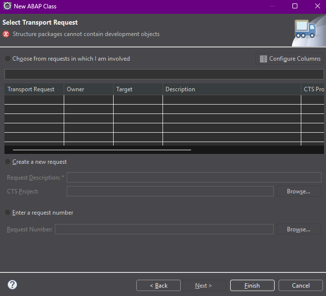
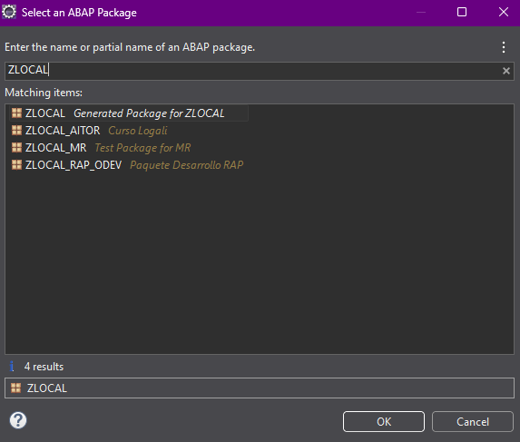
Unterpaket wählen und ABAP-Klasse ausführen
Nach Auswahl eines geeigneten Unterpakets konnte eine erste ABAP-Klasse erstellt und über die ABAP Console ausgeführt werden.
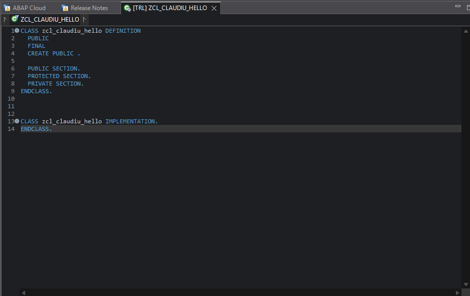

Minimalbeispiel
Das Minimalbeispiel dient dazu, die Verbindung, die Projektstruktur und die Ausführbarkeit in ADT zu prüfen. Es ist kein fachliches Programm, sondern ein technischer Funktionstest.
CLASS zcl_claudiu_hello DEFINITION
PUBLIC
FINAL
CREATE PUBLIC.
PUBLIC SECTION.
INTERFACES if_oo_adt_classrun.
ENDCLASS.
CLASS zcl_claudiu_hello IMPLEMENTATION.
METHOD if_oo_adt_classrun~main.
out->write( 'Hello Claudiu - ABAP Cloud works.' ).
ENDMETHOD.
ENDCLASS.Warum if_oo_adt_classrun?
Das Interface macht die Klasse in Eclipse ADT direkt ausführbar. Die Methode main ist der Einstiegspunkt.
Warum out->write?
Damit wird eine einfache Ausgabe in der ABAP Console erzeugt. So lässt sich sofort erkennen, ob Projekt, Login und Laufzeit funktionieren.
Fehlerbilder und Learnings
- Leere Systemauswahl in BAS: Eine vorhandene Destination bedeutet nicht automatisch, dass BAS sie als ABAP Cloud System anbietet.
- Dummy URL: Bei aus Service Keys erzeugten Destinations muss geprüft werden, ob eine echte ABAP Trial URL eingetragen ist.
- Properties: Einzelne Properties können je nach Trial-Setup fehlen oder anders benannt sein.
- Paketfehler: Nicht jedes Paket kann Objekte enthalten. Structure Packages dienen der Gliederung.
- Präfix-/Berechtigungsfehler: In ABAP Cloud Trial sind Namensräume und erlaubte Präfixe begrenzt.
Offene Punkte
Prüfung: Die Screenshots wurden als Assets im Repository abgelegt und in die Dokumentation eingebunden. Als nächster Schritt sollte geprüft werden, ob alle Bilder auf GitHub Pages korrekt geladen werden und ob die Reihenfolge fachlich passt.
- Screenshot-Reihenfolge auf der veröffentlichten Seite prüfen.
- Bildbeschreibungen und Alt-Texte bei Bedarf fachlich präzisieren.
- Optional: weitere Screenshots aus der vollständigen Liste ergänzen.
Screenshot-Galerie
Status
Status: Inhaltlich implementiert und mit Screenshot-Assets ergänzt. Die Dokumentation beschreibt den Stand der Einrichtung des SAP BTP ABAP Trial, der Destination-Konfiguration und des Wechsels zu Eclipse ADT.
Dokumentationsstand: 21.05.2026 ~23 Uhr.
Technischer Hinweis: Die Screenshots liegen unter btp-abap-trial/assets/screenshots/ und werden relativ mit ./assets/screenshots/... geladen.